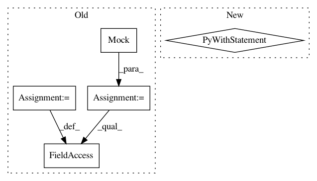

2740d30f03c8f1f48f9665802e48a6bd4c8d156f,tensorflow_datasets/testing/dataset_builder_testing.py,TestCase,test_download_and_prepare_as_dataset,#TestCase#,107
Before Change
@tf.contrib.eager.run_test_in_graph_and_eager_modes()
def test_download_and_prepare_as_dataset(self):
dl_manager = tf.test.mock.Mock(spec_set=download_manager.DownloadManager)
dl_manager.download_and_extract.return_value = self.sample_dir
dl_manager.extract.return_value = self.sample_dir
dl_manager.manual_dir = self.sample_dir
self.builder.download_and_prepare(dl_manager=dl_manager,
compute_stats=False)
split_to_checksums = {} // {"split": set(records_checksums)}
After Change
def test_download_and_prepare_as_dataset(self):
result_p = promise.Promise.resolve(self.sample_dir)
fct = lambda obj, url, async_=False: async_ and result_p or self.sample_dir
with tf.test.mock.patch.multiple(
"tensorflow_datasets.core.download.DownloadManager",
download_and_extract=fct,
extract=fct,
manual_dir=self.sample_dir,
):
self.builder.download_and_prepare(compute_stats=False)
split_to_checksums = {} // {"split": set(records_checksums)}
for split_name, expected_records_number in self.SPLITS.items():
dataset = self.builder.as_dataset(split=split_name)
self._check_split(dataset)
In pattern: SUPERPATTERN
Frequency: 3
Non-data size: 5
Instances
Project Name: tensorflow/datasets
Commit Name: 2740d30f03c8f1f48f9665802e48a6bd4c8d156f
Time: 2018-12-03
Author: pierrot@google.com
File Name: tensorflow_datasets/testing/dataset_builder_testing.py
Class Name: TestCase
Method Name: test_download_and_prepare_as_dataset
Project Name: aleju/imgaug
Commit Name: ff1bfcb0499605f2cedf9b2aa53dafff2cd4a8c0
Time: 2019-09-07
Author: kontakt@ajung.name
File Name: test/augmenters/test_contrast.py
Class Name: TestCLAHE
Method Name: _test_single_image_3d_rgb_to_x
Project Name: google/deepvariant
Commit Name: 0a159f32075b2e8a9c0875ff54a68b7ed457bd9a
Time: 2018-02-27
Author: mdepristo@google.com
File Name: deepvariant/make_examples_test.py
Class Name: RegionProcessorTest
Method Name: test_label_variant_raises_for_non_confident_variant